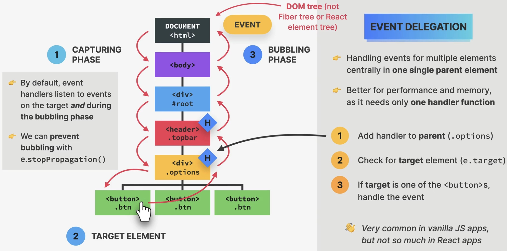
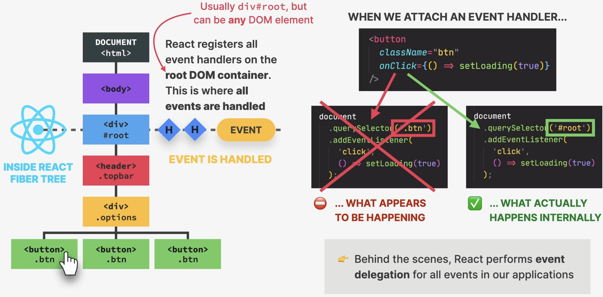

How Events Works in React
Event propagation and delegation
Also see Events und Event-Object.

Event Propagation and Delegation
In the browser DOM, an event is created at the root (the
documentelement), not at the element, which triggered the eventIt then travels down to the target element (Capturing Phase)
At the target element, we choose to handle the event by providing an event handler function on the element
Once the event arrives at the target element, it travels back to the root element (Bubbling Phase)
By default, event handlers listen to events on target and during the bubbling phase, which means, every element the event travels through during the bubbling phase could potentially also handle that event (if the handler matches the event type)
we can prevent bubbling via
e.stopPropagation()(on the event object), though this is rarely desired –> can also be done in React
Event delegation
allows for handling events of multiple elements centrally in one single parent element
better performance and memory, as it needs only one handler function (if we had 1000 buttons, all handling the same event, all of them needed a copy of the event handler function) in the first common parent element:
Add handler to parent
Check for target element (does it come from a child?)
If target is a child element, handle the event
Hint
React already does event delegation behind the scenes with our events.
How React handles events
React registers all event handlers on the root DOM container (where App lives).
This is where all events are handled. React bundles all events of the same type
as one collection and registers it on the root node of the Fiber tree, hence all
events are delegated to the root container.
Important
What matters here is the DOM tree, not the React component tree. For example, a child component might not necessarily be a direct child element in the DOM tree.

How React handles events
Synthetic events
<input onChange={(e) => setText(e.target.value)} />
React passes the event object into the handler function by default (just like in vanilla JavaScript), but it differs from JavaScript
In JavaScript though, we get access to the native DOM event object, for example
PointerEvent,MouseEvent,KeyboardEventReact gives us a SyntheticEvent, a thin wrapper around the DOM’s native event object adding and changing some functionality
Has the same interface as native event objects, like
stopPropagation()andpreventDefault()Fixes browser inconsistencies so that events works in the exact same way in all browsers
Most synthetic events bubble (including focus, blur and change) except for scroll
Event handler in React compared to JS
Attributes for event handlers are named using camelCase, e.g.
onClickinstead ofonclick(event handler) orclick(event listener)Browser default behaviour can not be prevented by returning
false(only by usingpreventDefault())Attach
Captureto the event handler if you need to handle during capture phase e.g.onClickCapture